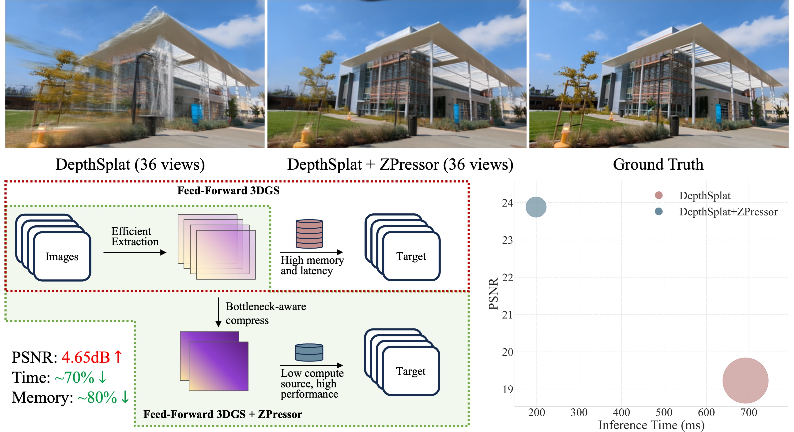

1ZIP Lab, Zhejiang University 2Monash University
ZPressor is an architecture-agnostic module that compresses multi-view inputs for scalable feed-forward 3DGS.
We visualize the result of DepthSplat with 36 view input for novel view synthesis and after adding ZPressor. We report PSNR, inference time and memory usage before and after simply adding the ZPressor, where the radius of the bubble corresponds to memory.
Feed-forward 3D Gaussian Splatting (3DGS) models have recently emerged as a promising solution for novel view synthesis, enabling one-pass inference without the need for per-scene 3DGS optimization. However, their scalability is fundamentally constrained by the limited capacity of their encoders, leading to degraded performance or excessive memory consumption as the number of input views increases. In this work, we analyze feed-forward 3DGS frameworks through the lens of the Information Bottleneck principle and introduce ZPressor, a lightweight architecture-agnostic module that enables efficient compression of multi-view inputs into a compact latent state that retains essential scene information while discarding redundancy. Concretely, ZPressor enables existing feed-forward 3DGS models to scale to over 100 input views at 480P resolution on an 80GB GPU, by partitioning the views into anchor and support sets and using cross attention to compress the information from the support views into anchor views, forming the compressed latent state. We show that integrating ZPressor into several state-of-the-art feed-forward 3DGS models consistently improves performance under moderate input views and enhances robustness under dense view settings on two large-scale benchmarks DL3DV-10K and RealEstate10K.
Overview of our ZPressor. Our proposed ZPressor is a plug-and-play module designed for feed-forward 3DGS frameworks. It addresses the challenge of processing dense input views by strategically grouping input view features X based on selected anchor views, then features within each respective group are compressed as Z.
Model Efficiency. Compressing the input view information not only improves robustness and performance, but also enhances efficiency. To validate this, we compare the model efficiency of DepthSplat with and without ZPressor under 480P resolution, evaluating the number of 3D Gaussians, the test-time inference latency, and the peak memory usage. As shown in the figure, the benefits of integrating ZPressor are clear. In particular, as the number of context views increases, the baseline model's predicted 3D Gaussian numbers, memory usage, and inference time all grow linearly, whereas ZPressor helps maintain stable resource consumption across all aspects.
Bottleneck Constraint Analysis. We conduct experiments under two settings, Context Gap 50 (CG50, in blue) and Context Gap 100 (CG100, in pink), where context gap refers to the frame distance between input views. CG100 thus contains more information than CG50. Under CG50, increasing the number of anchor views from 7 to 9 leads to a performance drop, suggesting that 7 clusters are sufficient and additional ones introduce redundancy. In contrast, under CG100, increasing anchors from 7 to 9 improves performance, indicating a higher information bottleneck for scenes with more information. These results highlight the effectiveness of our ZPressor in implementing the IB principle and show that the information bottleneck is critical in balancing compression and information preservation.
@article{wang2025zpressor,
title={ZPressor: Bottleneck-Aware Compression for Scalable Feed-Forward 3DGS},
author={Wang, Weijie and Chen, Donny Y. and Zhang, Zeyu and Shi, Duochao and Liu, Akide and Zhuang, Bohan},
journal={arXiv preprint arXiv:2505.23734},
year={2025}
}